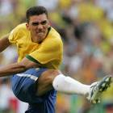

|  | Lucio |
| Gender | Male |
| Ethnic | Brazilian |
| Job | Brazilian Footballer |
| Desc | xxxx |
Affiliation
| Org | Brazil National Team |
| Club as Player | xxxx |
2014 02 23 Retrieve
[Lucio on his former Inter Milan team-mate Marco Materazzi] It’s difficult to talk about Materazzi, because I arrived in Italy in 2009 and the last time I saw him play well was in 2006. Perhaps it hurts him that before I arrived he’d never got past the Champions League Round of 16. I always had an excellent rapport with Mourinho. He once said that if he had to go to war, I’d be the first person he’d bring with him. Materazzi was a very nasty player - he went in to hurt opponents. I heard him say that. He behaves the same way off the field - as a nasty person
2017 01 06 Retrieve
[Lucio on Silvio Gazzaniga’s FIFA World Cup trophy] It was the most incredible sensation. Becoming a world champion was to realise a childhood dream. To hold that beautiful World Cup, with all its glamour, was the greatest satisfaction and feeling of joy. I will take that moment with me for the rest of my life and, to ensure I never forget, I have a replica at home. I am just so grateful to have had the chance to be a world champion and hold that trophy
2017 10 21 Retrieve
[Lucio hands some advice to Brazil’s FIFA U-17 World Cup side] Every game is decisive from now on. That’s what makes a World Cup so appealing after all. But I think the team can do it. So, boys: keep working hard with love, passion and commitment and always believe in your dreams